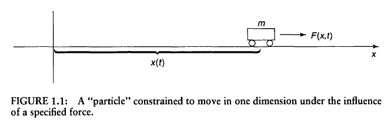

Imagine a particle of mass m, constrained to move along the x-axis, subject to some specified force $F(x,t)$. 
Classical Mechanics approaches this problem with the objective of determining the position of the particle at any given time $x(t)$. Once we know that, we can figure out:
We get $x(t)$ by applying Newton's second law: $F=ma$
Quantum Mechanics approaches the same problem quite differently. In this case we look for the particle's wave function, $\Psi (x,t)$ and we get it by solving one of the famous equation, the Schrödinger equation: $$i\hbar\frac{\partial \Psi}{\partial t}=-\frac{\hbar^2}{2m}\frac{\partial ^2 \Psi}{\partial x^2}+V\Psi$$
The Schrödinger equation plays a role analogous to Newton's second law:
Given suitable initial conditions (typically, $\Psi(x,0)$), the Schrödinger equation determines $\Psi(x,t)$ for all future time.
Borns's statistical interpretation provides an answer to the question, " what exactly is the wave function and what does it do for you once you've got it?".
Born's statistical interpretation of the wave function says that $ \left |\Psi(x,t) \right |^2$ gives the probability of finding the particle at point $x$, at time $t$ or more precisely
$$ \left |\Psi(x,t) \right |^2 = \begin{Bmatrix} \text{probability of finding the particle between x and (x+dx) at time t} \end{Bmatrix}$$The statistical interpretation introduces a kind of indeterminacy into quantum mechanics, for even if you know everything the theory has to tell you about the particle, you cannot predict with certainty the outcome of a simple experiment to measure its position.
All quantum mechanics has to offer is statistical information about the possible results.
Because of the statistical interpretation, probability plays a central role in quantum mechanics. The following section is a refresher on some of the common concepts used in probability/statistics.For more detail, I recommend Khan Academy Course.
Discrete variables can take on only certain isolated values.
The sum of all posible outcomes $$N=\sum_{j=0}^{\infty }N(j)$$
The Probability for each outcome $$P(j)=\frac{N(j)}{N}$$
The Sum of all probabilities is one $$\sum_{j=1}^{\infty}P(j) = 1$$
The average value of $\left\langle j \right\rangle$ $$\left\langle j \right\rangle = \frac{\sum jN(j)}{N}=\sum_{j=0}^{\infty}jP(j)$$
In quantum mechanics the average is usually the quantity of interest; and it's also known as "the expectation value". It's a misleading term, since it suggests that this is the outcome you would be most likely to get if you made a single measurement(that would be the most probable value, not the average value).
$$\left\langle j^2 \right\rangle = \sum_{j=0}^{\infty}j^2P(j)$$
In general, the average value of some function of j is given by $$\left\langle f(j) \right\rangle = \sum_{j=0}^{\infty}f(j)P(j)$$
The variance $$\sigma ^2 = \left\langle j^2 \right\rangle - \left\langle j \right\rangle ^2$$
The standard deviation $$\sigma = \sqrt{\left\langle j^2 \right\rangle - \left\langle j \right\rangle ^2}$$
A continuous variable is the opposite of a discrete variable, which can only take on a certain number of values.
A few examples of continuous variables:
Some very important rules
The probability that $x$ lies between $a$ and $b$ is given by $$P_{ab} = \int_{a}^{b} \rho(x)dx$$
$$1 = \int_{-\infty}^{+\infty}\rho(x)dx$$
$$\left\langle x \right\rangle = \int_{-\infty}^{+\infty}x\rho(x)dx$$
$$\left\langle f(x) \right\rangle = \int_{-\infty}^{+\infty}f(x)\rho(x)dx$$
$$\sigma ^2 = \left\langle x^2 \right\rangle - \left\langle x \right\rangle ^2$$
where $\rho(x)$ is the probability density
The position and momentum of a particle cannot be simultaneously measured with arbitrarily high precision. There is a minimum for the product of the uncertainties of these two measurements. There is likewise a minimum for the product of the uncertainties of the energy and time.
The more precisely determined a particle's position is, the less precisely is its momentum $$\sigma_x \sigma_p \geq \frac{\hbar}{2}$$
This is not a statement about the inaccuracy of measurement instruments, nor a reflection on the quality of experimental methods; it arises from the wave properties inherent in the quantum mechanical description of nature. Even with perfect instruments and technique, the uncertainty is inherent in the nature of things.
Resources: